Pick a starting layout
Choose a starting layout and add the widgets you want.
Show weather, calendar, news and security cameras on an Android TV, Fire TV or Android tablet.
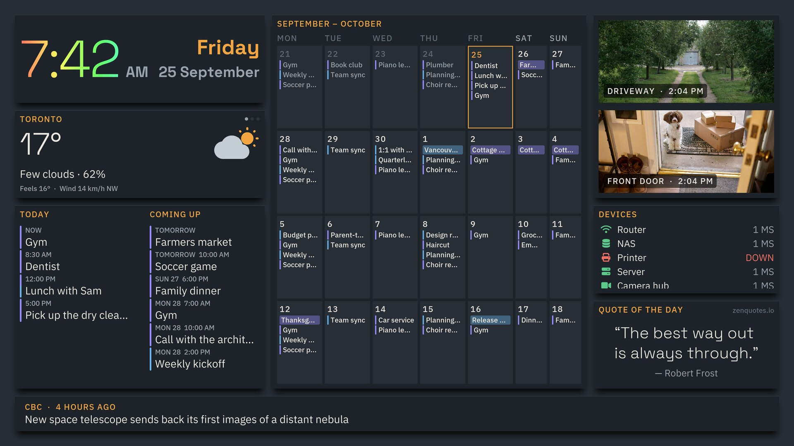
Pick a layout, an orientation and a theme.
Choose a starting layout, add the tiles you need, and adjust their position and size in the visual editor.
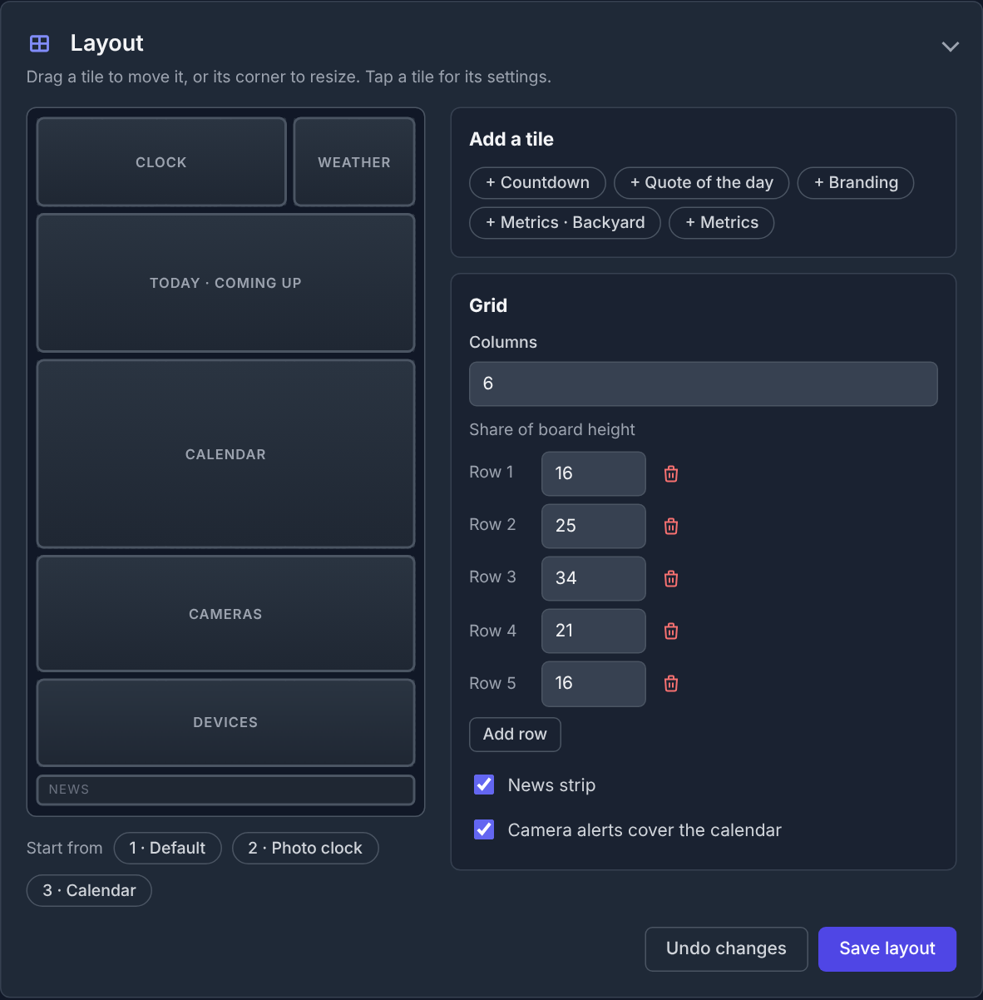
Choose a starting layout and add the widgets you want.
Move tiles and change their size to fit your screen.
Start with a few tiles and add others whenever you like.
Use a TV, tablet or spare screen as the place everyone checks before heading out the door.
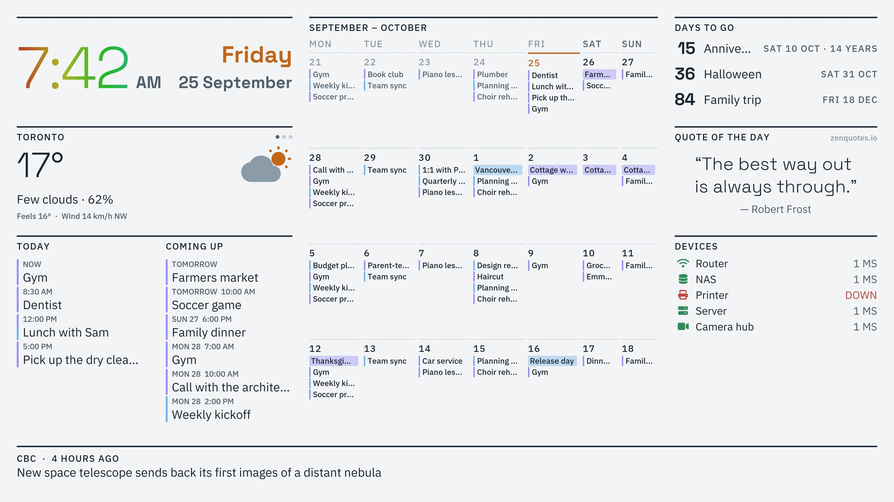
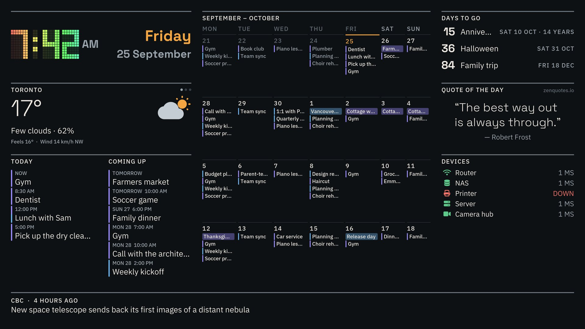
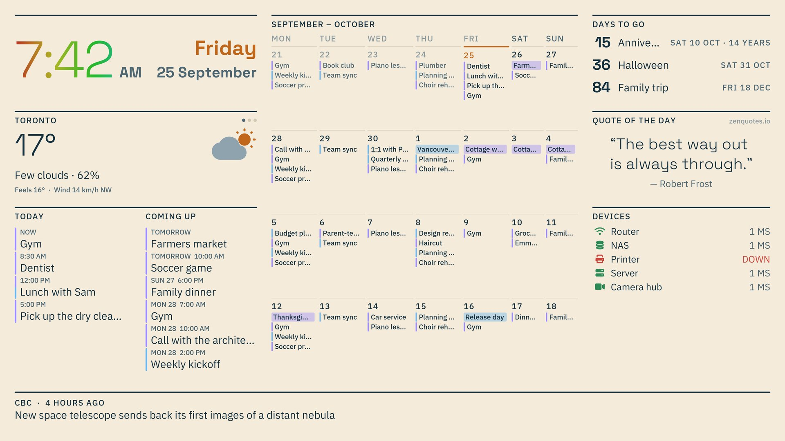
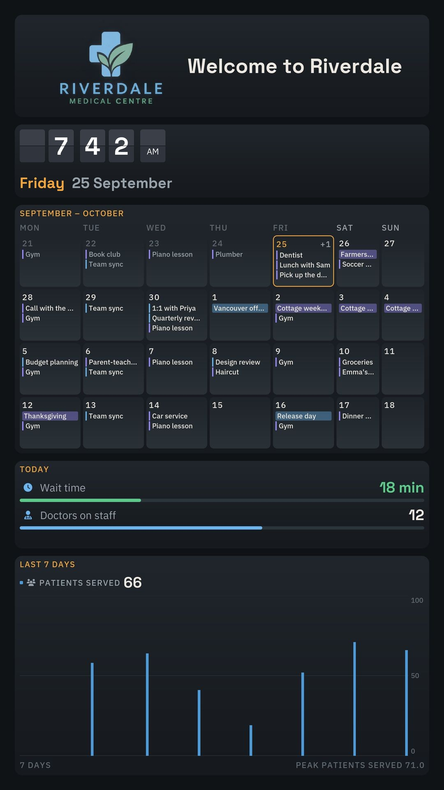
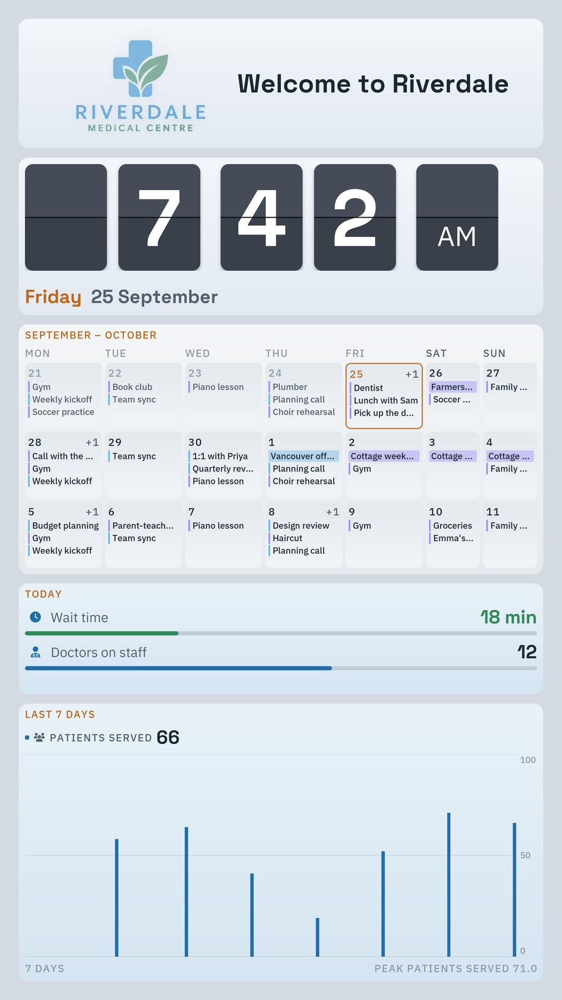
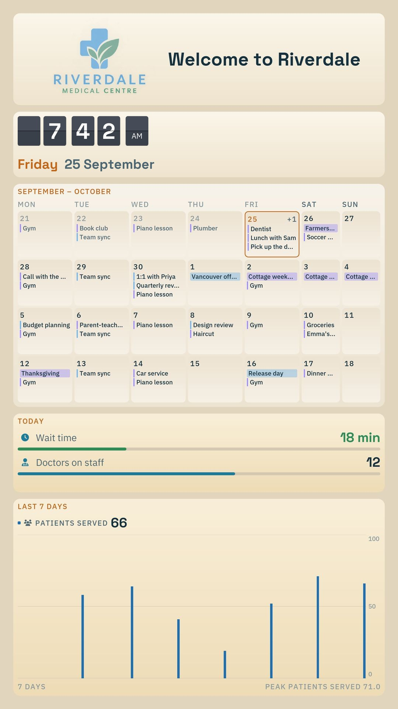
Show sales targets, wait times, quality metrics and more where everyone can see them.
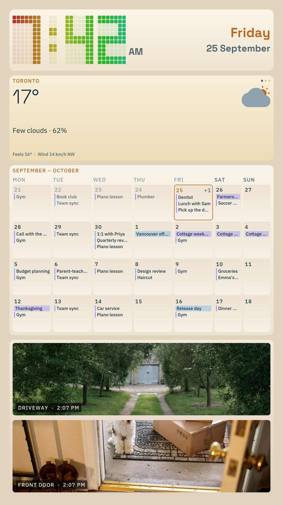
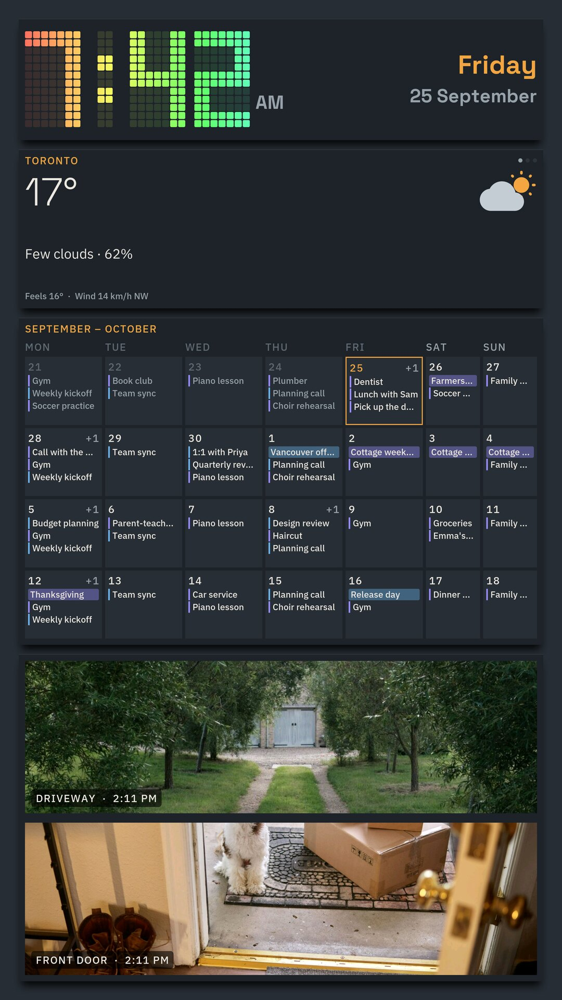
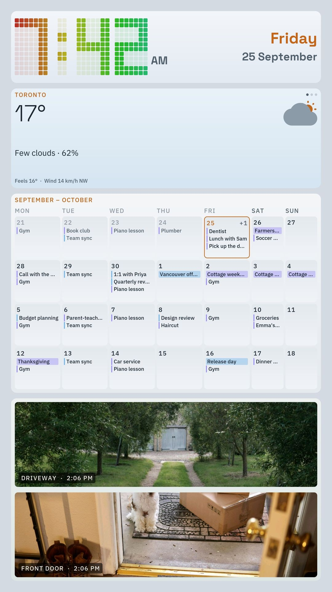
The home dashboard is free. Cameras and Pro are monthly subscriptions.
Calendar, weather, news and more for the home.
Snapshot views for up to 4 cameras.
Branding and live data for business screens.
QRK Board doesn't collect user data. There is no account, sign-in or analytics, and your settings stay on your device.
Read the privacy pageQRK Board is designed for Android TV, Google TV, Amazon Fire TV and Android tablets.
The everyday home dashboard features are free. Cameras (camera views and alerts) and Pro (custom branding and API-powered metrics) are separate monthly subscriptions.
No. You can arrange dashboard tiles with the drag-and-drop layout editor. Connecting custom data sources may require API details and some technical knowledge.
Cameras shows snapshot views for up to 4 supported cameras, with live video alerts for AI motion detection on supported cameras. Pro adds metrics from REST APIs, GraphQL and InfluxDB. Compatibility depends on the camera, endpoint and configuration.
No. QRK Board has no account, sign-in or analytics, and nothing you set up is sent to us. Your settings stay on your device, and the board connects directly to the services behind the tiles you use. The details are in the privacy policy.